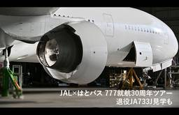
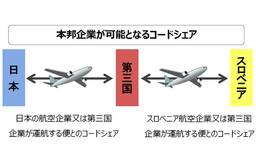
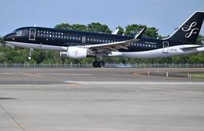
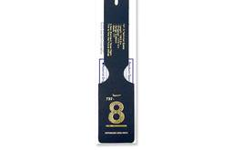

Aviation Wire
https://www.aviationwire.jp
航空経済紙「Aviation Wire」は、航空機やエアライン、空港、官公庁に関する情報や各種統計などをお届けして参ります。
フィード
航空局、飛行検査機「チェックスター」見学会 中部で11/7
Aviation Wire
国土交通省航空局（JCAB）の飛行検査センターは、中部空港（セントレア）で11月7日に開かれる「空の日エアポートフェスタinセントレア 2026」で、飛行検査機の格納庫見学会「チェックスター見学会」を開く。格納庫で飛行 […]
2時間前
“空飛ぶ段ボール箱”A350F、9/29初飛行へ 27年就航目指す次世代大型貨物機
Aviation Wire
エアバスは現地時間9月25日、開発中の大型貨物機A350Fの初飛行を29日午前10時20分（日本時間午後5時20分）に予定していると発表した。段ボール箱風のデザインを施した飛行試験初号機のMSN700（登録記号F-WX […]
12時間前

【動画】JAL×はとバス 777就航30周年ツアー 退役JA733J見学も
Aviation Wire
はとバスと日本航空（JAL/JL、9201）のコラボ企画「ボーイング777就航30周年記念 JAL SKY MUSEUM見学とJAL国際線ビジネスクラス機内食ランチ」が9月22日開催。東京駅のはとバス乗り場からJRCで […]
1日前

日本とスロベニア、第三国含むコードシェア可能に 航空当局間で枠組み
Aviation Wire
国土交通省航空局（JCAB）は9月25日、日本とスロベニアの航空当局間で、両国の航空会社によるコードシェア（共同運航）を可能にする枠組みを締結したと発表した。国際線では第三国を含むすべての航空会社とのコードシェアを可能 […]
1日前

25年10-12月期、定時出発・到着90％超え1社のみ スターフライヤー首位＝国交省情報公開
Aviation Wire
国土交通省航空局（JCAB）は、全日本空輸（ANA/NH）や日本航空（JAL/JL、9201）、LCC 3社など、特定本邦航空運送事業者10社に関する「航空輸送サービスに係る情報公開」の2025年10-12月期分を公表 […]
1日前
羽田空港、2タミに新カードラウンジ「Lounge Us」10/1開業 バーや個室PCブースも
Aviation Wire
日本空港ビルデング（9706）は9月25日、羽田空港第2ターミナル4階の国内線出発ゲートエリアに、カードラウンジ「Lounge Us（ラウンジ ユーズ）」を10月1日にオープンすると発表した。63席で、キッズルーム、個 […]
1日前
スカイマーク、737救命胴衣をポーチに 羽田・茨城で限定販売
Aviation Wire
スカイマーク（SKY/BC、9204）は、ボーイング737-800型機に搭載していた救命胴衣をアップサイクル（作り替え）したポーチを数量限定で販売する。機内に搭載されていた未使用品を外装に活用したもので、9月26日に羽 […]
1日前
ジェットスター、国内4路線176便追加 成田－札幌など＝冬ダイヤ
Aviation Wire
ジェットスター・ジャパン（JJP/GK）は、冬ダイヤ（10月25日から27年3月27日まで）の国内4路線で追加販売を始めた。対象は成田－札幌（新千歳）、福岡、熊本と、関西－那覇の各路線で、4路線合計で176便を追加する […]
2日前
ANA、赤い羽根65回目 国内線全便・50空港で協力
Aviation Wire
全日本空輸（ANA/NH）を中核とするANAグループは、10月1日から始まる第80回「赤い羽根共同募金運動」に協力する。15日まで、ANA国内線全便で客室乗務員が赤い羽根を着用するほか、ANAが就航する国内50空港と空 […]
2日前

スカイマーク、737-8就航記念タグにネイビー 10/1発売
Aviation Wire
スカイマーク（SKY/BC、9204）は9月24日、ボーイング737-8（737 MAX 8）の就航記念グッズ第3弾として、「737-8 就航記念バゲージタグ ネイビーエディション」を10月1日から機内限定で販売すると […]
2日前